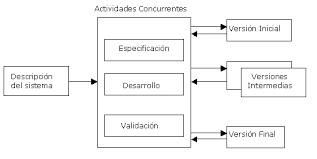

El desarrollo evolutivo consta del desarrollo de una versión inicial
que luego de exponerse se va refinando de acuerdo de los comentarios o
nuevos requerimientos por parte del cliente o del usuario final. Las
fases de especificación, desarrollo y validación se entrelazan en vez
de separarse.
Existen dos tipos de desarrollo evolutivo:
-
Desarrollo exploratorio: donde el objetivo del proceso es trabajar
con el cliente para explorar sus requerimientos y entregar un
sistema final. El desarrollo empieza con las partes del sistema que
se comprenden mejor. El sistema evoluciona agregando nuevos
atributos propuestos por el cliente.
-
Prototipos desechables: donde el objetivo del proceso de desarrollo
evolutivo es comprender los requerimientos del cliente y entonces
desarrollar una definición mejorada de los requerimientos para el
sistema. El prototipo se centra en experimentar con los
requerimientos del cliente que no se comprenden del todo.

Ventajas
- La especificación puede desarrollarse de forma creciente.
-
Los usuarios y desarrolladores logran un mejor entendimiento del
sistema. Esto se refleja en una mejora de la calidad del
software.
-
Es más efectivo que el modelo de cascada, ya que cumple con las
necesidades inmediatas del cliente
Desventajas
-
Proceso no Visible: Los administradores necesitan entregas para
medir el progreso. Si el sistema se necesita desarrollar rápido,
no es efectivo producir documentos que reflejen cada versión del
sistema.
-
Sistemas pobremente estructurados: Los cambios continuos pueden
ser perjudiciales para la estructura del software haciendo
costoso el mantenimiento.
-
Se requieren técnicas y herramientas: Para el rápido desarrollo
se necesitan herramientas que pueden ser incompatibles con otras
o que poca gente sabe utilizar.